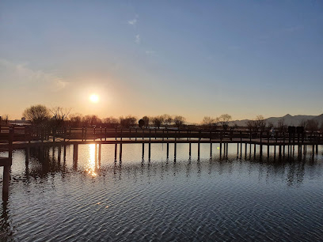

추천여행
추천여행
 주소
주소
 문의처
문의처

상세소개
봄이면 수수한 벚꽃이 흐드러지게 피고 가을이면 빨간 단풍이 매력을 뽐내는 화명생태공원! 요리보고 조리 봐도 울창한 나무와 숲이 있는 이곳은 상쾌한 공기를 마시며 라이딩 하기에 딱 좋은 장소다. 씽씽- 페달을 밟고 가을바람을 가로지르며 달리다 보면 ‘센티함이 뭐예요?’라는 생각이 절로 든다.
화명생태공원에는 울긋불긋 물든 단풍을 보며 달릴 수 있는 가로수길과 함께 초급, 중급, 고급으로 나누어진 자전거 체험장이 있다. 코스에는 언덕과 굴곡진 곡선이 많아 꽤 흥미진진하게 레포츠를 즐길 수 있다. 아직 자전거 타기가 능숙하지 않다면 평탄한 길로 이뤄진 초급 코스에서 안전한 라이딩이 가능하다. 가을을 맘껏 탔다면 잠시, 휴식을 취해보자. 생태공원이라는 이름 그대로 이곳엔 싱그러운 식물이 많아 종종 풀 바람이 분다. 화명 신도시와 가까워 접근성이 좋은 화명생태공원에는 식물원과 산책로, 데크 등이 있어 휴식을 취하기에도 좋다. 또, 레포츠타운이 있어 카누, 카약 등 수상스포츠를 즐길 수 있다. 레저와 힐링을 동시에 할 수 있는 이곳! 사계절~ 언제 가도 좋은 화명생태공원에서 이토록~ 찬란한 가을을 싱긋하게 타 보자.
이용안내
- 연중무휴
- 화명생태공원 매일 06:00 - 21:00
교통안내
- 도시철도 2호선 화명역 5번 출구 (도보 10분)
- 버스 15, 59, 111, 121 북구보건소 정류장 하차 (도보 10분)
- 주차 화명생태공원 주차장